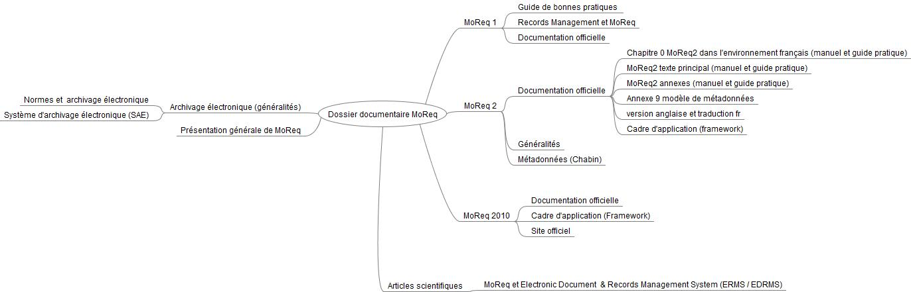
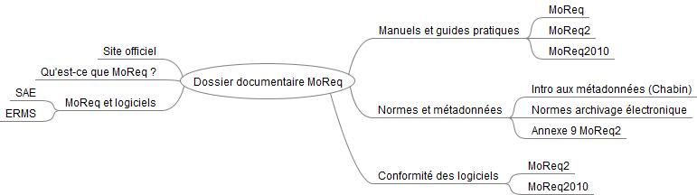

JUSTIFICATION DU DOSSIER DOCUMENTAIRE
MoReq propose des spécifications pour les logiciels dont l'usage concerne la gestion de documents électroniques dans le cadre du Records Management. La principale difficulté que j'ai rencontrée a consisté à organiser la documentation face aux évolutions de MoReq (MoReq, MoReq2, MoReq2010).
Organisation du contenu
Premier modèle de structure
En fonction de mes découvertes et des types de documents sélectionnés, j'ai d'abord organisé le dossier documentaire selon les différentes versions de MoReq comme sur la mindmap ci-dessous
Le problème de cette structure est la redondance de l'information. En effet, la typologie d'information est mal gérée. Par exemple, la documentation officielle revient à trois reprises selon les trois versions de MoReq. Cette structure ne permet donc pas de respecter le principe de condensation des informations appliqué aux sites Web. Par conséquent, cette structure oblige l'utilisateur à multiplier les tâches s'il veut avoir accès à de la documentation officielle car celle-ci aurait été répartie à plusieurs niveaux et donc sur plusieurs pages Web.
Deuxième modèle de structure
Afin d'améliorer le problème de condensation des informations, la table des matières s'avère être un bon moyen d'organiser des contenus. A l'instar d'un plan de classement, il me semble que celle-ci pourrait rejoindre l'un des principes de l'architecture de l'information puisqu'elle est un système d'organisation qui hiérarchise les informations.
Création des catégories
La création de catégorie répond au principe d'étiquetage de l'architecture de l'information.
J'ai essayé de condenser la documentation officielle des trois versions de MoReq sous l'intitulé «manuel et guides pratique». Cela m'a notamment donné l'occasion par exemple de mettre en exergue le chapitre 0 de MoReq2 qui est adapté à l'environnement français.
La partie «Qu'est-ce que MoReq? - Définitions» regroupe plusieurs ressources qui définissent et décrivent le contexte de MoReq.
Suite aux recherches documentaires, il m'a semblé logique d'organiser les informations concernant les SAE et les ERMS dans la même catégorie «MoReQ et les logiciels» qui vise à établir les liens entre MoReq et les logiciels. Cette section est organisée selon la typologie de documents trouvés (articles et travail académique) et tend à respecter principe de l'architecture de l'information.
Par ailleurs, il m'a semblé pertinent de créer une catégorie concernant les métadonnées et les normes dans le domaine de l'archivage numérique.
Enfin la catégorie «conformité des logiciels» permettra à l'utilisateur d'avoir accès à la documentation permettant de tester la conformité des logiciels en fonction des spécifications prodiguées par MoReq.
Utilisation des hyperliens
Le dossier documentaire utilise des hyperliens afin de pointer vers les ressources documentaires ( URL des sites Web et documents en version PDF stockés sur Github). Que ce soit pour les catégories et les ressources documentaires, j'ai essayé de formuler correctement les liens lors de l'écriture des fichiers en html afin que les liens soient significatifs pour l'utilisateur. Cela tend à rejoindre le principe de système de navigation dont l'objectif est de signifier à l'utilisateur les chemins et la signalisation.
Point de vue de l'utilisateur
L'architecture de l'information doit prendre en considération les tâches que les utilisateurs devront appliquer pour retrouver des informations. La complexité réside dans le fait que les utilisateurs ne cherchent pas de la même manière.
Ainsi, il me semble que le choix de la table des matières comme structure du dossier documentaire tend à répondre aux 4 comportements d'accès à l'information car celle-ci est à la fois un index et un ensemble de pages Web.
Les 4 comportements sont les suivants:
- Exploratoire (possibilité de filtrer en cliquant sur les liens de la table des matières)
- Recherche exhaustive (la table des matières en elle-même est un plan d'organisation)
- Recherche précise (récupération d'une information, la table des matières tend vers ce comportement mais n'est pas optimale)
- Besoin de retrouver une information (chaque catégorie du dossier documentaire est une page Web)